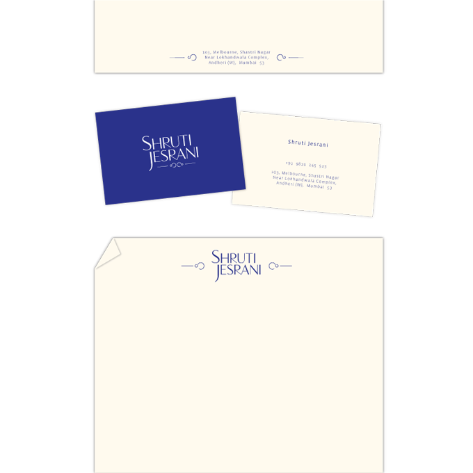

FOLO
Re-designing brand Shruti Jesrani
← all projects
Shruti Jesrani needed a re-design for her brand identity. Her work is hand-done, beautifully crafted jewellery.

Malleable, Rustic and Hand-done